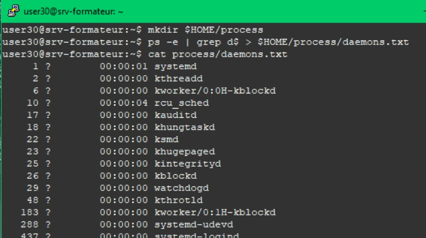

Transcription du document de formation ; texte et captures isolées sont distincts de l’aide pédagogique.
Utilisation des systèmes
TP du Module 08 – Mécanismes Linux et Bash avancé
Avant de démarrer ce TP, il convient d’avoir suivi les vidéos du module 8 et d’avoir effectué le TP précédent.
Durée estimée
45 à 60 minutes
Proposition de solution
Dans le module que vous venez de parcourir, vous trouverez les commandes nécessaires pour répondre aux questions.
Listez tous les processus qui finissent par un d. Le résultat sera stocké dans $HOME/process/daemons.txt.
mkdir $HOME/process
ps -e | grep d$ > $HOME/process/daemons.txt
cat process/daemons.txt
Recherchez les fichiers dont le nom se termine par .conf à partir de la racine. Cette recherche ne devra être effectuée que sur le système de fichier racine. Le résultat sera affiché à l'écran tout en étant stocké dans le fichier

Visuel isolé du document — Solution du TP 1 - Utilisation des systèmes
$HOME/resultats/fichiers.conf.
mkdir $HOME/resultats
find
/
-mount
-type
f
-name
"*.conf"
2>/dev/null
|
tee
resultats/fichiers.conf
cat resultats/fichiers.conf
L’exécution de la commande précédente a duré un certain temps ; comment connaître le temps exact d’exécution de celle-ci ?
time
find /
-mount
-type f
-name
"*.conf"
2>/dev/null |
tee
resultats/fichiers.conf
En une commande, renvoyez dans le fichier $HOME/resultats/compteur.txt le nombre de fichiers trouvés au point 2, sans utiliser le fichier fichiers.conf. Le résultat devra comporter uniquement ce nombre (ce résultat sera réutilisé dans des scripts).